交互实验集：用可操作的模拟探索光学、波动、元胞自动机与进化生态。每个实验独立子目录，不需要编译或后端，可以直接通过浏览器访问。
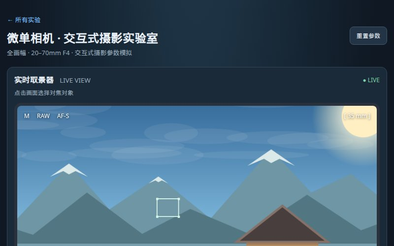
实时拧动焦距、光圈、ISO、快门，观察曝光、景深与噪声如何改变画面。
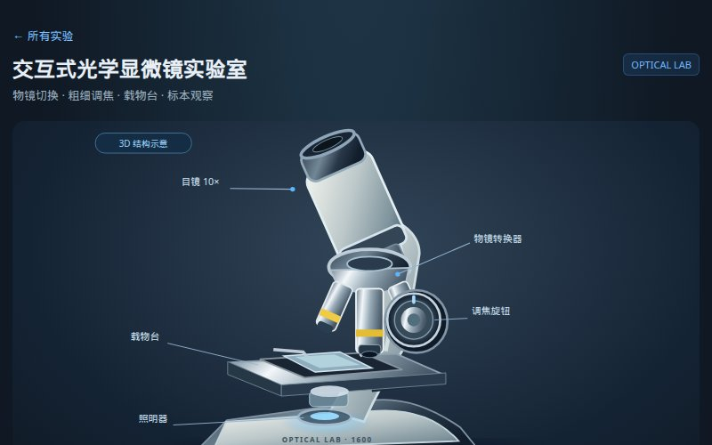
切换 4×–100× 物镜，调节粗细焦螺旋，观察洋葱表皮、叶片与血液涂片。
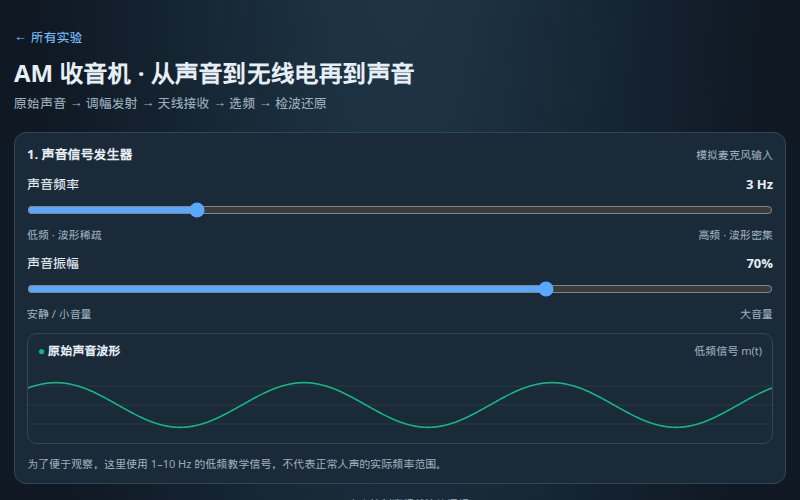
拖动声音频率与振幅，观察载波如何被调幅、选频、检波还原成声音。
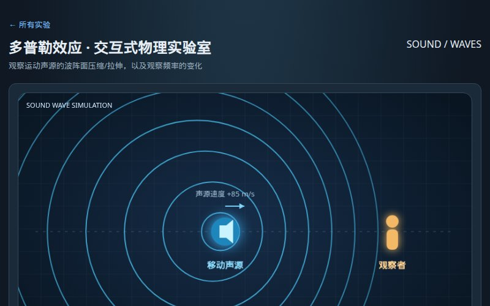
推动声源速度，实时看见波阵面压缩与拉伸，感受接近与远离时的音高变化。
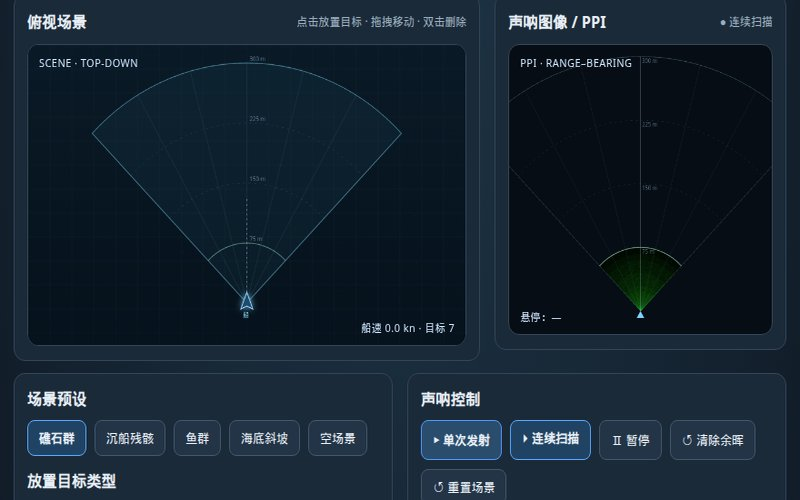
发射扇形波束，调节量程、波束数、频率与 TVG，在 PPI 显示器上实时绘制距离—方位声呐图像。
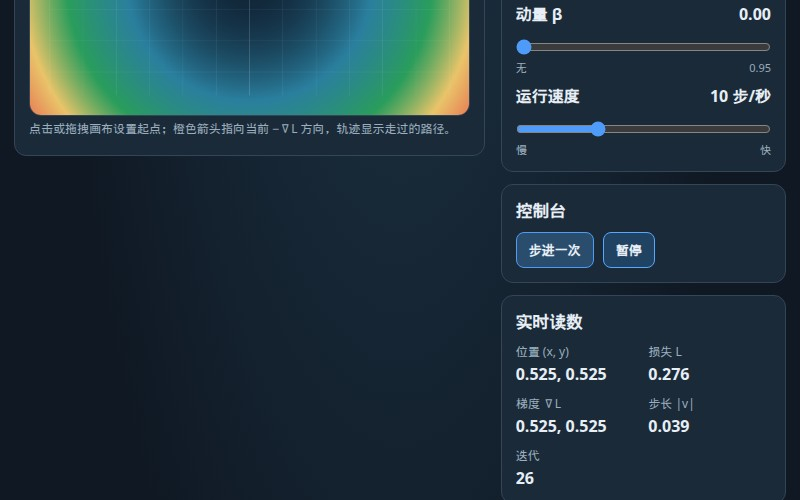
在二维损失曲面上放置起点，调整学习率与动量，观察优化器如何沿梯度下山。
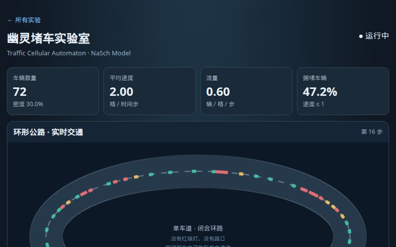
调节密度、限速、随机刹车，在环形公路上观察拥堵波如何凭空出现。
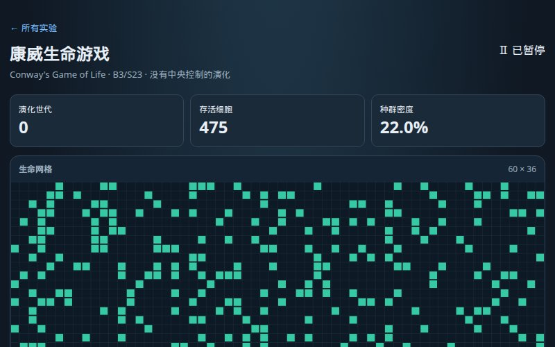
在网格上播种细胞，看 B3/S23 规则如何让滑翔机、脉冲星自行演化。
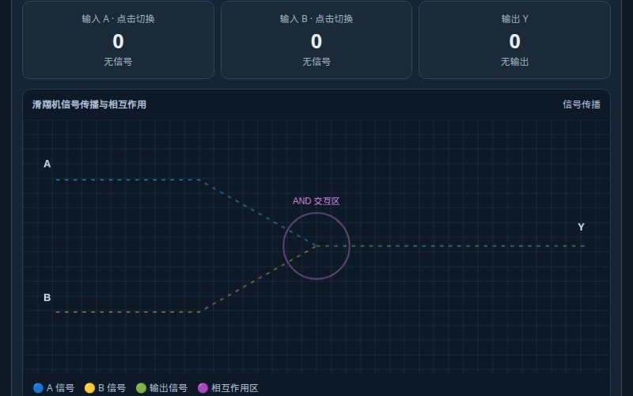
把滑翔机当作 0/1 信号，运行 AND、OR、XOR、NAND 碰撞实验。
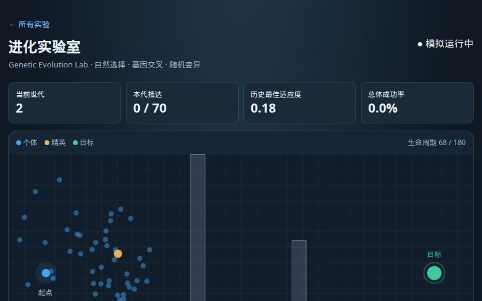
放出一群随机个体，让选择、交叉与变异带领种群绕过障碍抵达目标。
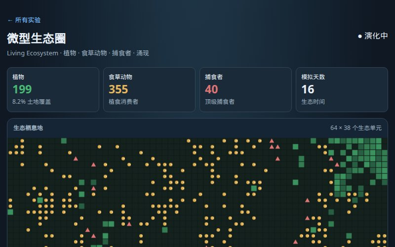
种植物、放兔子、加狐狸，观察捕食与繁殖如何涌现出种群周期。